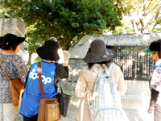
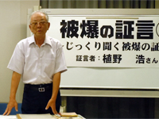
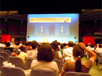
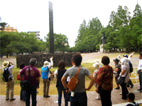
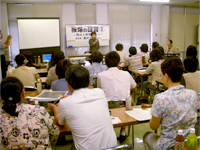
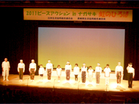
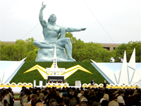

「２０１１ピースアクションinヒロシマ・ナガサキ」報告
「核兵器の廃絶と戦争のない平和な世界」を願って、８月４日から９日まで日本生協連の「ピースアクションinヒロシマ・ナガサキ」が行われました。ヒロシマ行動に埼玉県生協連１人、ナガサキ行動にさいたまコープ５人と埼玉県生協連１人が参加しました。
≪概 要≫「ヒロシマ行動」８月４日～６日
□４日「フィールドワーク」 広島城コース
 広島城門から被爆ユーカリ、被爆石垣、司令部半地下式通信室跡、大本営跡、旧護国人社被爆鳥居、歩兵第11連隊跡など、広島城周辺の被爆遺構を見学しました。広島城周辺は爆心から北ないし北北東に位置し、中国軍管区司令部あたりで750ｍ、その周辺に各種の軍施設がありました。熱戦と爆風圧で広島城地域は、全壊・全焼しました。そして、約1万人の軍人・軍属が死傷したと言われています。また、軍の施設に動員された学徒、看護師、看護学生などもこの地域で死傷しましたが、その数は定かではありません。原爆で焼けこげたが生き残った被爆ユーカリは、1971年の台風にも耐え、今では大きな幹となって成長していました。同様に、被爆に耐えて生き残った木々は、広島市内に約100本あるあるそうです。
□５日「じっくり聞く被爆の証言」（植野浩さん）
 中学１年生の時に爆心地から５kmで被爆。生まれた時から戦争が日常の時代であり、中学に入学してからは授業がほとんどなく、勤労奉仕・家屋疎開作業・農村手伝いの毎日でした。６日は、非番(休み)であったこともあり、食料確保のため農村に手伝いに行っていた。当時13歳だった植野さんは、何が起きたか理解できず、信じられない光景（黒い雨や男女の区別のつかない遺体等）を次々に目の当たりにされてきたとのこと。何が怖いかと聞かれると、人間が眼の前で死んでいくこと、そして学校のグランドで沢山の遺体を焼いている匂いと言っていました。軍国少年であった自分を振り返り、教育の大切さについて力説していました。
□５日「ヒロシマ虹のひろば」広島県立総合体育館
 日本生協連の浅田会長は｢全国の生協では、被爆者の思いを胸に、平和と核兵器廃絶に向けて努力してきました。昨年のＮＰＴ再検討会議では、10年ぶりに核兵器をなくす国際的な最終文書が採択され大きな成果を得た。核兵器廃絶を確かなものにするため、次の一歩を築かねばなりません。だから今年のテーマは『継承と創造』にしました。原発事故をうけエネルギー政策の検討を開始しました｡｣と主催者を代表してあいさつしました。続いて、松井広島市長が「思いをつなぐこと、伝えることが大切」と挨拶されました。
≪概 要≫「ナガサキ行動」８月７日～９日
□７日 生協平和のまち歩き「原爆落下中心地を訪ねて」～平和公園散策コース～
 爆心地である平和公園周辺の主要な遺構・慰霊碑を見学しました。長崎市原子爆弾無縁死没者追悼祈念堂の説明からはじまり、平和記念像・モニュメント、原爆投下中心碑などで66年前の惨状を想像しながら散策しました。浦上天主堂にまつわるキリスト教徒の歴史と過酷な運命、小倉から長崎へ投下が変更されたこと、長崎中心地から浦上に投下された理由等を説明し、少しでも耳に残ったことを周りの方にお話しくださいとまとめられました。
□８日「朗読と被爆の証言」（証言者：奥村アヤコさん）
 初めに、かよ子桜ものがたりの朗読がありました。
次に｢当時８歳で爆心地に近い城山町で被爆、一瞬にして私を一人にしてみんな消えてしまいました。46年間原爆の話はできませんでしたが、ある本の中に私の体験記を書いたのがキッカケとなり被爆体験を伝えています。戦後、一人ぼっちで地獄のような日々を送りましたが、隣近所の方に助けられました。平和の原点は人の痛みがわかる心を持つこととお話ししています。今の平和は多く方の犠牲の上につくられています。平和をつくり守り伝える人になってください。私の人生を変えたのは原爆、三度使われることのないよう長崎を最後の被爆地にと願っています｡｣と証言されました。
□８日「ナガサキ虹のひろば」
長崎市民会館文化ホール(参加約600人)
 活水中学・高校のハンドベルチームによるハンドベル演奏のオープニングから始まりました。日本生協連の芳賀専務が｢東日本大震災は多くのことを私たちに教えてくれました。助け合い・支え合う心が大切なこと、もっと生協を強くしないといけないことが確認できました。また、今までのくらしの有り様も問題提起されました。福島第１原子力発電所の事故から、日本のこれからのエネルギーについてまとめていきます。｣と主催者挨拶、続いて、黙祷、田上富久長崎市長からの連帯の挨拶、証言と朗読劇｢チンチン電車の詩｣、寺井一通とメゾン・ド・シャンソンの会に皆さんによる平和コンサートなどが行われました。
□９日「長崎原爆犠牲者慰霊平和祈念式典」
 田上市長は｢私たちはこれからどんな社会をつくろうとしているのか、根底から議論をし、選択する時がきています。より安全なエネルギーを基盤にする社会への転換を図るために、原子力にかわる再生エネルギーの開発を進めることが必要です。核保有国をはじめとする国際社会は、今こそ｢核兵器禁止条約｣の締結に向けた努力をする時です。日本政府には被爆国の政府としてこうした動きを強く推進していくことを求めます。今後とも広島市と協力し、世界に向けて核兵器廃絶を訴え続けていきます｣と宣言しました。